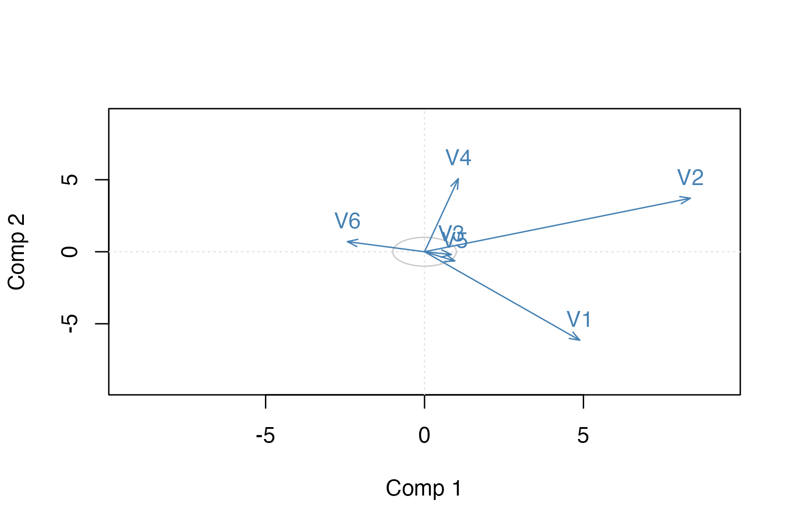
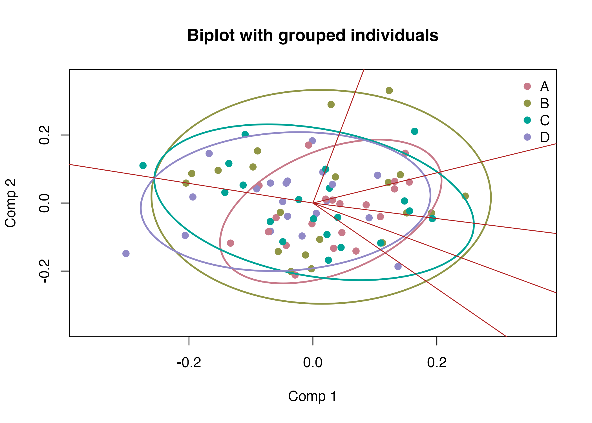
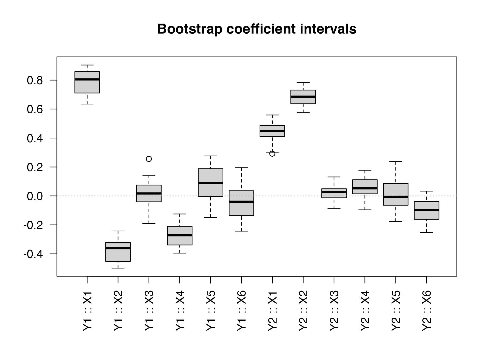

Visualising PLS Fits with bigPLSR
Frédéric Bertrand
Cedric, Cnam, Parisfrederic.bertrand@lecnam.net
2025-11-15
Source:vignettes/plotting-guide.Rmd
plotting-guide.RmdScore plots with ellipses
plot_pls_individuals(fit, comps = c(1, 2), groups = groups,
ellipse = TRUE, ellipse_level = 0.90,
main="Component scores with 90% ellipses")
Variable correlations and biplots
plot_pls_variables(fit, comps = c(1, 2), main="Correlation circle")
plot_pls_biplot(fit, comps = c(1, 2), groups = groups,
ellipse = TRUE, ellipse_level = 0.90,
main="Biplot with grouped individuals")
Bootstrap summaries
boot <- pls_bootstrap(X, Y, ncomp = 2, R = 30, type = "xy",
parallel = "none", seed = 99)
summary_boot <- summarise_pls_bootstrap(boot)
summary_boot
#> variable response mean sd percentile_lower percentile_upper
#> 1 X1 Y1 0.791966500 0.08475455 0.65091428 0.90289674
#> 2 X2 Y1 -0.380048683 0.08171928 -0.49781216 -0.25457028
#> 3 X3 Y1 0.012627990 0.09703593 -0.18655063 0.17408431
#> 4 X4 Y1 -0.270970620 0.07432352 -0.38062029 -0.15730963
#> 5 X5 Y1 0.080291163 0.12171747 -0.13147528 0.25938757
#> 6 X6 Y1 -0.046823538 0.11212752 -0.22609050 0.17094542
#> 7 X1 Y2 0.441409522 0.06951718 0.29938758 0.54873705
#> 8 X2 Y2 0.680267880 0.05902086 0.57777174 0.77117828
#> 9 X3 Y2 0.024624397 0.05236652 -0.07377591 0.12615176
#> 10 X4 Y2 0.058193995 0.07629797 -0.07393110 0.17107246
#> 11 X5 Y2 0.004567168 0.09882843 -0.16886315 0.15817355
#> 12 X6 Y2 -0.105158254 0.08187656 -0.24889987 0.02755033
#> bca_lower bca_upper
#> 1 0.63889624 0.90411438
#> 2 -0.49832691 -0.25254384
#> 3 -0.19046850 0.25161840
#> 4 -0.39465965 -0.20957578
#> 5 -0.14827809 0.27595767
#> 6 -0.24286724 0.17122482
#> 7 0.29520940 0.55900911
#> 8 0.63002240 0.78375488
#> 9 -0.08807535 0.13103953
#> 10 -0.09604065 0.17744844
#> 11 -0.15404991 0.23713080
#> 12 -0.25177682 0.01207836
plot_pls_bootstrap_coefficients(boot, main="Bootstrap coefficient intervals")
boot <- pls_bootstrap(X, Y, ncomp = 2, R = 30, type = "xy",
parallel = "none", seed = 99, return_scores = TRUE)
plot_pls_bootstrap_scores(boot,main="Bootstrap score dispersion")